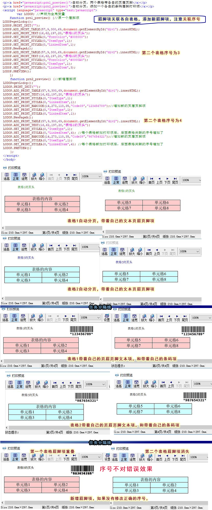

眉脚项关联各自表格，添加新眉脚项，注意关联序号
一个任务中有多个表格，根据每个表格设置自己的页眉页脚，这种时候可以使用眉脚项关联表格。眉脚项不会按照关联偏移值显示，也是固定位置显示，就是和表格关联一起显示。
后期修改模版的时候，如果需要给每个表格增加新的眉脚项，注意序号。
因为lodop中的序号是整个任务中的，增加新的眉脚项，会影响之前打印项的序号。
本文例子，一个任务中有两个table表格，各自自动分页，分别带着自己的一个文本眉脚项。
该例子中，两个表格各自分了两页，所以整个任务共四页。
第一个表格自动分页两页，带着表格1的页头这个打印项，
第二个表格自动分页两页，带着表格2的页头这个打印项。（这时候第二个表格打印项任务中序号是3）
prn2_preview第二个方法里，给每个表格新增了表格自己的一个条码眉脚项。
第一个表格增加值为123456789的条码眉脚项，
第二个表格增加值为987654321的条码眉脚项，
这个时候，由于表格1里增加了新的打印项，所以表格2的表格打印项本身，变成了第四项。
注意后面的的原来的文本眉脚项和新增的条码眉脚项，都需要关联新的序号值。
如果不用新增后的正确序号，错误效果现象：
（1）第一个表格上方页眉页脚重叠了。
（2）第二个表格页眉页脚打印项消失了。
简短问答：
1.页头新增加一个二维码打印项，打印项重叠了，第二个表格眉脚项消失了
是否用了关联，新增打印项后，排查关联的打印项序号是否正确。
做个简单例子发过来，这边测试下，关联序号是否正常。
做个简单的能还原问题的例子，数值都用具体数值，发过来，这边测试下。
--简短问答结束----
测试代码：
<script language="javascript" src="LodopFuncs.js"></script> </head> <body> <div id="div1"> <table border=1 cellSpacing=0 cellPadding=1 width="100%" style="border-collapse:collapse;background-color:#ffcccc;text-align:center;"> <tr> <td colspan="2">表格的内容</td> </tr> <tr> <td>单元格1</td> <td>单元格2</td> </tr> <tr> <td>单元格3</td> <td>单元格4</td> </tr> <tr> <td>单元格5</td> <td>单元格6</td> </tr> <tr> <td>单元格7</td> <td>单元格8</td> </tr> </table> </div> <div id="div2"> <table border=1 cellSpacing=0 cellPadding=1 width="100%" style="border-collapse:collapse;background-color:#ccffff;text-align:center;"> <tr> <td colspan="2">表格的内容</td> </tr> <tr> <td>单元格1</td> <td>单元格2</td> </tr> <tr> <td>单元格3</td> <td>单元格4</td> </tr> <tr> <td>单元格5</td> <td>单元格6</td> </tr> <tr> <td>单元格7</td> <td>单元格8</td> </tr> </table> </div> <p><a href="javascript:prn1_preview()">自动分页，两个表格带各自的页眉页脚</a></p> <p><a href="javascript:prn2_preview()">自动分页，添加一个各自的条码眉脚打印项</a></p> <script language="javascript" type="text/javascript"> var LODOP; //声明为全局变量 function prn1_preview() {//根据超文本打印项高度47自动分页 LODOP=getLodop(); LODOP.PRINT_INIT(""); LODOP.ADD_PRINT_TABLE(57,9,300,69,document.getElementById("div1").innerHTML); LODOP.ADD_PRINT_TEXT(16,62,197,20,"表格1的页头"); LODOP.SET_PRINT_STYLEA(0,"FontColor","#008000"); LODOP.SET_PRINT_STYLEA(0,"ItemType",1); LODOP.SET_PRINT_STYLEA(0,"LinkedItem",1); LODOP.NewPageA(); LODOP.ADD_PRINT_TABLE(57,9,300,69,document.getElementById("div2").innerHTML); LODOP.ADD_PRINT_TEXT(16,62,197,20,"表格2的页头"); LODOP.SET_PRINT_STYLEA(0,"FontColor","#0000A0"); LODOP.SET_PRINT_STYLEA(0,"ItemType",1); LODOP.SET_PRINT_STYLEA(0,"LinkedItem",3); LODOP.PRINT_DESIGN(); }; function prn2_preview() {//没有根据打印项高度47自动分页 LODOP=getLodop(); LODOP.PRINT_INIT(""); LODOP.ADD_PRINT_TABLE(57,9,300,69,document.getElementById("div1").innerHTML); LODOP.ADD_PRINT_TEXT(16,62,197,20,"表格1的页头"); LODOP.SET_PRINT_STYLEA(0,"ItemType",1); LODOP.SET_PRINT_STYLEA(0,"LinkedItem",1); LODOP.ADD_PRINT_BARCODE(14,273,110,35,"Code39","123456789");//增加新的页眉页脚项 LODOP.SET_PRINT_STYLEA(0,"ItemType",1); LODOP.SET_PRINT_STYLEA(0,"LinkedItem",1); LODOP.NewPageA(); LODOP.ADD_PRINT_TABLE(57,9,300,69,document.getElementById("div2").innerHTML); LODOP.ADD_PRINT_TEXT(16,62,197,20,"表格2的页头"); LODOP.SET_PRINT_STYLEA(0,"ItemType",1); LODOP.SET_PRINT_STYLEA(0,"LinkedItem",4); //每个表格新加打印项后，后面表格关联的序号增加了 LODOP.ADD_PRINT_BARCODE(14,273,110,35,"Code39","987654321");//增加新的页眉页脚项 LODOP.SET_PRINT_STYLEA(0,"ItemType",1); LODOP.SET_PRINT_STYLEA(0,"LinkedItem",4); //每个表格新加打印项后，后面表格关联的序号增加了 LODOP.PRINT_DESIGN(); }; </script> </body>
图示 ：
